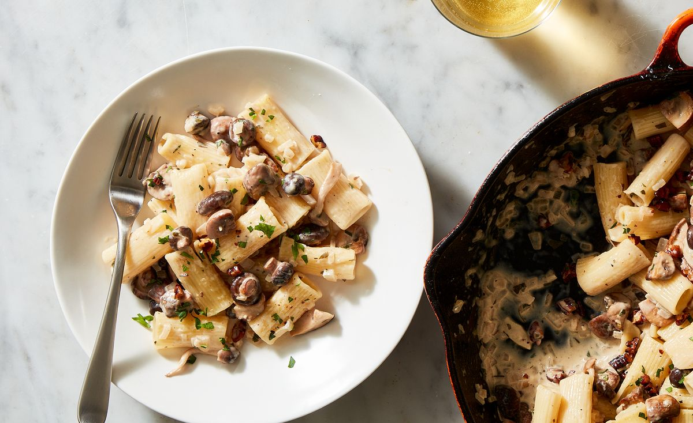

Mushroom Pasta

Description
If a bowl of creamy, earthy, umami-rich pasta sounds good to you, give this flexible recipe a go. It tastes great with any variety of mushrooms, and is easily adapted with alternate alliums, herbs, nuts, pasta shapes, and hard cheeses. We love the earthy flavor toasted pecans, but if nuts aren't your bag, toasted fresh breadcrumbs or panko are great crunchy alternatives.
Ingridients
- 3 tbsp. extra-virgin olive oil
- 3/4 c. chopped pecans
- 2 sprigs fresh rosemary (optional)
- 1 tsp. lemon zest
- 3 tbsp. butter
- 1 lb. mixed mushrooms, such as maitake, shiitake, cremini, or oyster, torn or sliced into bite-sized pieces
Kosher salt
- Freshly ground black pepper
- 1 lb. pasta, such as rigatoni
- 1 large shallot, finely chopped
- 1/2 c. chopped fresh parsley, divided
- 1/2 c. dry white wine
- 3/4 c. heavy cream
- 1/2 c. freshly grated Parmesan, plus more for serving
- 2 tbsp. lemon juice (from 1 lemon)
Instructions
- In a large, high-sided skillet, heat oil over medium heat until shimmering. Add pecans and rosemary if using and cook, stirring frequently, until nuts are golden, about 3 minutes. Transfer to a medium heat-proof bowl; toss with lemon zest and a pinch of salt.
- Wipe out skillet, return to heat, and add butter. Once melted, add mushrooms, a large pinch of salt, and a few cranks of black pepper; stir to combine. Cover and let liquid release from mushrooms, about 5 minutes. Uncover and cook, stirring occasionally, until mushrooms are golden all over and no liquid remains, 3-5 minutes more.
- Meanwhile, boil pasta in a large pot of boiling salted water until al dente. Reserve 1 cup pasta water and drain.
- To the skillet with the mushrooms, add shallot and ¼ cup parsley. Cook, stirring until fragrant, 1 to 2 minutes.
- dd white wine and cook until evaporated, 3 to 4 minutes, then add pasta, cream, and ½ cup of the pasta water. Cook, tossing frequently, until sauce has thickened slightly, about 3 minutes. Remove from heat and fold in parmesan, lemon juice and remaining parsley. Season to taste with salt and pepper.
- Serve topped with fried pecans and more parmesan.